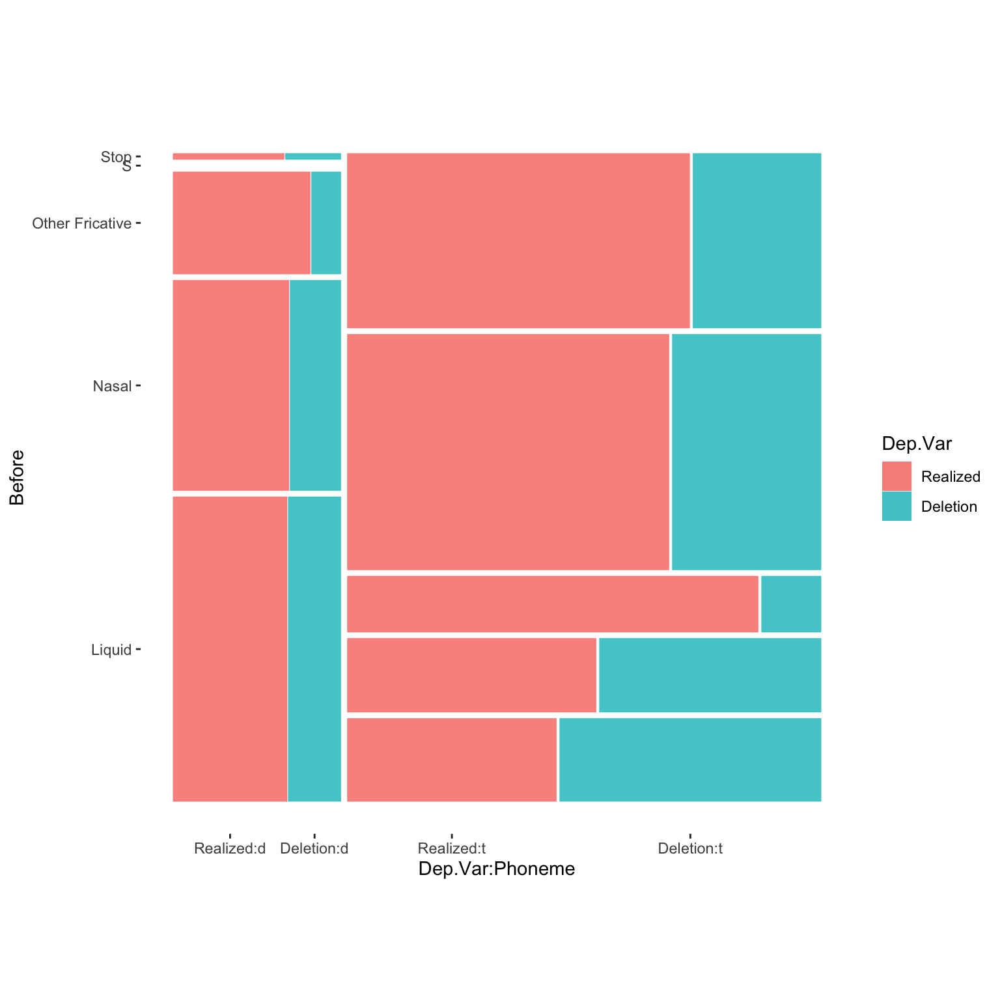

Below the results for fixed effects is a table of the correlations of the fixed effects. This table is a good way to spot non-orthogonal effects you might not yet have caught (though you should have caught these effects if you thoroughly explored your data using summary statistics). Look at only the coefficients for the correlations of levels of different parameters. Generally any value over \(|0.3|\)1 should be investigated further. If you have any correlations over \(|0.7|\) you should be worried. In your table there is no correlation higher than \(|0.7|\), but there are a few over \(|0.3|\): After.New1*Before4\(|0.304|\); After.New1*Stress1\(|0.432|\); After.New2*Before4\(|0.431|\); After.New2*Phoneme1\(|0.307|\); Morph.Type1*Before3\(|0.319|\); Morph.Type2*Before3\(|0.515|\); Before1*Phoneme1\(|0.543|\); and Before4*Phoneme1\(|0.438|\). These correlations suggest it might be worthwhile to re-check the summary statistics, looking especially at the cross-tab of After.New and Before, After.New and Phoneme, Morph.Type and Before, Morph.Type and Phoneme, and Before and Phoneme.2
There are two other methods for testing for a relationship between your fixed effect predictors that relate to the kind of relationship your fixed effects predictors might have. The first is that the predictors have an interaction the other is that they are (multi-) collinear.
Interactions
An interaction arises when two independent fixed effects work together to predict the variation of the application value. For example, based on the Conditional Inference Tree analysis you know that it is not case that gender itself explains the social variation in Deletion vs. Realized (this is confirmed by the analysis of data from just young speakers, where Sex is not significant), nor is it that age explains the social variation (confirmed by the non-significance of both Age.Group and Center.Age in the full model). Instead, it seems that older men use Deletion more frequently than everyone else. This is an interaction. It is the combination of Age.Group and Sex that (potentially) best explains the social variation. You can test this in your model by creating an interaction group with these two fixed effect predictors. You do this by including the interaction term Sex*Age.Group in your analysis. To make things easier here you can simplify and again consider middle-age and older speakers together. You can also drop Phoneme as it is non-significant among both cohorts. When you include an interaction term, the individual components of the interaction will also be included as singular predictors.
# Create a simplified Age.Group.Simple columntd <- td %>%mutate(Age.Group.Simple =cut(YOB, breaks =c(-Inf, 1979, Inf), labels =c("Old/Middle", "Young")))# Create a regression analysis with a Sex*Age.Group.Simple interaction grouptd.glmer.sex.age.interaction <-glmer(Dep.Var ~ After.New + Morph.Type + Before + Stress + Sex*Age.Group.Simple + (1| Speaker), data = td, family ="binomial", glmerControl(optCtrl =list(maxfun =20000), optimizer ="bobyqa"))summary(td.glmer.sex.age.interaction)
What you can see from the summary(td.glmer.sex.age.interaction) and Anova(td.glmer.sex.age.interaction) results is that this interaction term is not significant and does not add explanatory value to the analysis. The negative polarity of the estimate coefficient of the interaction term Sex1:Age.Group.Simple1 indicates that when the level of Sex is Female (1) and Age.Group.Simple is Old/Middle (1) the overall probability decreases by \(-0.1750\). This coefficient represents the extra effect of both predictors working together. The \(p\)-value of \(0.19902\), however, indicates that this change is not statistically different from zero/no effect. In other words, even though we know older men use Deletion more frequently, the extra effect of combining age and sex does not emerge as significant when the influence of the linguistic predictors is considered. If you want to home in on the older/middle men in your results, you can reorder the Sex predictor. Using the fct_rev() function, which reverses the order of factors making the last “missing” factor first, is the easiest way to do this.
# Create a regression analysis with a Sex*Age.Group.Simple interaction group in which `Male` equals Sex1td.glmer.sex.age.interaction <-glmer(Dep.Var ~ After.New + Morph.Type + Before + Stress +fct_rev(Sex)*Age.Group.Simple + (1| Speaker), data = td, family ="binomial", glmerControl(optCtrl =list(maxfun =20000), optimizer ="bobyqa"))summary(td.glmer.sex.age.interaction)
You can see that the coefficient for the interaction term is identical, but with reverse polarity. It indicates that when Sex is Male and Age.Group.Simple is Old/Middle the extra effect is \(+0.1750\), but again, as you saw above, this difference is not significantly different from zero/no effect \(p = 0.19902\).
An alternative way to test this interaction is to create a four-way Sex:Age.Group.Simple interaction group and include it as a fixed effect. By doing this instead of testing for an extra effect caused by the interaction of these two variables, you are instead testing the difference in likelihood from the overall likelihood for each combination of age and sex, and determining whether this is significantly different from zero.
The levels of the four-way interaction group are F:Old/Middle, F:Young, M:Old/Middle, and M:Young. If you recreate your glmer() analysis, you should find that the third level, M:Old/Middle, to have a positive coefficient (Deletion more likely than the mean), and the others to have a negative coefficient (Deletion less likely than the mean).
# Create a regression analysis with the Age.Simple:Sex interaction group td.glmer.sex.age.interaction <-glmer(Dep.Var ~ After.New + Morph.Type + Before + Stress + Sex.Age.Group.Simple + (1| Speaker), data = td, family ="binomial", glmerControl(optCtrl =list(maxfun =20000), optimizer ="bobyqa"))summary(td.glmer.sex.age.interaction)
By using this four-way interaction group you can see that the M:Older/Middle (Sex.Age.Group.Simple3) coefficient is negative, and it is significantly different from zero/no effect. To find the coefficient for the missing fourth value, re-create the analysis using fct_rev().
# Create a regression analysis with the reversed Age.Simple:Sex interaction group td.glmer.sex.age.interaction <-glmer(Dep.Var ~ After.New + Morph.Type + Before + Stress +fct_rev(Sex.Age.Group.Simple) + (1| Speaker), data = td, family ="binomial", glmerControl(optCtrl =list(maxfun =20000), optimizer ="bobyqa"))summary(td.glmer.sex.age.interaction)
As with the other levels, Men:Young (fct_rev(Sex.Age.Group.Simple)1) is not significant. What you can conclude is that all women and young men are not significantly different from the overall probability (and by extension each other), but old/middle men are significantly different from the overall probability. Creating this four-way interaction group and including it as a fixed effect reveals this pattern in a way that including the interaction term Sex:Age.Simple does not. That being said, the results of the Anova() indicate that this predictor still does not add explanatory value to the analysis.
Collinearity
When fixed effects predictors are not independent we say they are (multi-) collinear. Collinearity and interactions are similar, but separate, phenomena.
Collinearity is the phenomenon whereby two or more predictor variables are highly correlated, such that the value/level of one can be predicted from the value/level of the other with a non-trivial degree of accuracy. Including both in an anlysis 1) violates the assumptions of the model; and 2) can actually result in diminished liklihood estimates for both predictors, masking real effects. As discussed before, in this Cape Breton data, Education, Job, and Age.Group are all collinear to various degrees. For example, if Job is Student, then the level of Education can be predicted (it will also be Student), and vice versa. For both, Age.Group can be predicted too (Young). These types of correlations are easy to see for social categories, but somewhat more difficult to tease out for linguistic categories. The first step is always a thorough cross tabulation of your independent variables. For a quick visual of cross tabulations you can employ a mosaic plot. Here is the code for creating a quick mosaic plot using ggplot2, which you likely already have installed if you’ve followed along with previous chapters.
library(ggmosaic)library(ggplot2)# Create a quick mosaic plot of Phoneme and Beforeggplot(td)+geom_mosaic(aes(product(Dep.Var, Before, Phoneme), fill = Dep.Var))+theme_mosaic()

In a mosaic plot the size of the box for each combination of variables corresponds to the relative number of tokens of that combination. The first major observation from the mosaic plot is that there are no preceding /s/ tokens where the underlying phoneme is /d/, and there are remarkably few tokens in which /d/ is preceded by a non-nasal stop.3 This indicates that you shouldn’t include both of these predictors in your model, or complexify the model by creating a interaction group of Phoneme and Before. This is because you can predict some of the values of Phoneme and Before. For example, if a token is underlyingly world-final /d/, the preceding segment will not be /s/. Likewise, if the preceding segment is /s/, the underlying phoneme must be /t/.
Lets look at another mosaic plot.
# Create a quick mosaic plot of Phoneme and Beforeggplot(td)+geom_mosaic(aes(product(Dep.Var, Before, After.New), fill = Dep.Var))+theme_mosaic()
This plot is a little bit hard to read. To make the x-axis labels a little easier to read, you can use the binary version of Dep.Var. You’ll remember that 1 is Deletion and 0 is Realized.
# Create a quick mosaic plot of Phoneme and Beforeggplot(td)+geom_mosaic(aes(product(Dep.Var.Binary, Before, After.New), fill = Dep.Var.Binary))+theme_mosaic()
This mosaic plot show that there are very few tokens with a preceding Stop and a following Pause. Though no apparent collinearity is present, this mosaic plot does reveal some interesting potential interactions. The effect of preceding /s/, liquids, and nasals appears to be specific to pre-consonental contexts, and perhaps also pre-vowel contexts for nasals. This suggests further exploration of the data is warranted — perhaps by creating separate glmer() models for each following context, by complexifying your full model by creating a Before and After.New interaction group, or by simplifying your full model by collapsing these two categories into simpler grouped categories, e.g., Pre-Pause, Liquid-Consonant, Liquid-Vowel, Nasal-Consonant, Nasal-Vowel, S-Consonant, S-Vowel, Other-Consonant, Other-Vowel, or similar.
# Create a new model using insights from the mosaic plotstd<-td %>%mutate(Before.After =factor(paste(td$Before, td$After.New, sep =".")))%>%mutate(Before.After =recode_factor(Before.After, "Liquid.Pause"="Pause","Nasal.Pause"="Pause","Other Fricative.Pause"="Pause", "S.Pause"="Pause", "Stop.Pause"="Pause", "Other Fricative.Consonant"="Other.Consonant","Stop.Consonant"="Other.Consonant", "Other Fricative.Vowel"="Other.Vowel", "Stop.Vowel"="Other.Vowel"))td.glmer.parsimonious.new <-glmer(Dep.Var ~ Before.After + Morph.Type + Stress + (1| Speaker), data = td, family ="binomial", glmerControl(optCtrl =list(maxfun =20000), optimizer ="bobyqa"))# Compare fit of new parsimonious model with old parsimonious modelanova(td.glmer.parsimonious, td.glmer.parsimonious.new)
The anova() function shows that td.glmer.parsimonious.new is a better fit model. In other words, it does a better job of predicting the variation in the data.
It is important, however, to point out that collinearity does not reduce the predictive power or reliability of the glmer() model as a whole — it only affects calculations regarding individual predictors. That is, a glmer() model with correlated predictors can indicate how well the entire bundle of predictors predicts the outcome variable, but it may not give valid results about any individual predictor, or about which predictors are redundant with respect to others. In other words, collinearity prevents you from discovering the three lines of evidence.
So how can you test whether your predictors are collinear? There are two measures beyond just looking at the correlation matrix (which can point to either collinearity or interaction).
The first method to test collinearity is to find the Condition Number (\(\kappa\) a.k.a. kappa). The function to calculate this comes from a package created by linguist Jason Grafmiller, which adapts the collin.fnc() function from Baayen’s languageR package to work with lme4 mixed models. To install this package you need to first install the devtools() package, and then you can download it. We will return to the original td.glmer.parsimonious to do this test.
The Condition Number here is less than \(6\) indicating no collinearity Baayen (2008: 182). According to Baayen (citing Belsley & Kuh & Welsch 1980), when the condition number is between \(0\) and \(6\), there is no collinearity to speak of. Medium collinearity is indicated by condition numbers around \(15\), and condition numbers of \(30\) or more indicate potentially harmful collinearity.
The second measure of collinearity is determining the Variable Inflation Factor (VIF), which estimates how much the variance of a regression coefficient is inflated due to (multi)collinearity. The function check_collinearity() from the performance package is used to calculate the VIF.
According to the performance package documentation, a VIF less than \(5\) indicates a low correlation of that predictor with other predictors. A value between \(5\) and \(10\) indicates a moderate correlation, while VIF values larger than \(10\) are a sign for high, not tolerable correlation of model predictors (James et al. 2013). The Increased SE column in the output indicates how much larger the standard error is due to the association with other predictors conditional on the remaining variables in the model.
Based on the Condition Number (\(\kappa<6\)) and the VIF (\(<5\)) you can report that any (multi-) collinearity in your model is within acceptably low limits. You can add this to your manuscript table, as in Table 1 (based on td.glmer.parsimonious), though you should always contextualize what these measures indicate (i.e., low collinearity) in the text too.
Table 1: Mixed-effects logistic regression testing the fixed effect of Following Context, Morpheme Type, Preceding Context, Stress and Phoneme and a random intercept of Speaker on the deletion of word-final (t, d) in Cape Breton English
Keep in mind that if there are interaction terms (e.g., Sex*Age.Group) in your model high VIF values are expected. This is because you are explicitly expecting and testing a correlation between two predictors. The (multi-) collinearity among two components of the interaction term is also called “inessential ill-conditioning”, which leads to inflated VIF values.
Also keep in mind that (multi-) collinearity might arise when a third, unobserved variable has a causal effect on two or more predictors’ effect on the dependant variable. For example, correlated Education and Job Type effects may be caused by an underlying age effect, if older speakers are generally less educated and blue-collar workers and young speakers are generally more educated and white collar workers. In such cases, the actual relationship that matters is the association between the unobserved variable and the dependant variable. If confronted with a case like this, you should revisit what independent predictors are included in the model. Non-inferential tools that can include (multi-) collinear descriptors (like Conditional Inference Trees or Random Forests) may help you.
References
Baayen, R.Harald. 2008. Analyzing linguistic data: A practical introduction to statistics using R. Cambridge: Cambridge University Press.
Belsley, David A. & Kuh, Edwin & Welsch, Roy E. 1980. Regression diagnostics: Identifying influential data and sources of collinearity. New York: Wiley.
James, Gareth & Witten, Daniela & Hastie, Trevor & Tibshirani, Robert. 2013. An introduction to statistical learning: With applications in r. New York: Springer. Retrieved from https://link.springer.com/book/10.1007/978-1-4614-7138-7c
Footnotes
Any absolute value greater than \(3\), or rather any positive value higher than \(+3\) or any negative value lower than \(-3\).↩︎
---title: "Mixed-Efects Logistic Regression Analysis: Part 3"date: "`r Sys.Date()`"license: "CC-BY-SA 4.0"description: "Doing a mixed-effects logistic regression analysis suitable for comparing to a *Goldvarb* analysis. Part 3: Correlations, Interactions, & Collinearity"crossref: fig-title: Table fig-prefix: Table fig-labels: arabicbibliography: references.bib---```{r setup, include=FALSE}knitr::opts_chunk$set(echo =TRUE)knitr::opts_chunk$set(tidy='styler', tidy.opts=list(strict=TRUE, scope="tokens", width.cutoff=50), tidy =TRUE)``````{r, include=FALSE}library(tidyverse)td <-read.delim("Data/deletiondata.txt") %>%filter(Before !="Vowel") %>%mutate(After.New =recode(After, "H"="Consonant"), Center.Age =as.numeric(scale(YOB, scale =FALSE)),Age.Group =cut(YOB, breaks =c(-Inf, 1944, 1979, Inf), labels =c("Old", "Middle", "Young")),Phoneme =sub("^(.)(--.*)$", "\\1", Phoneme.Dep.Var),Dep.Var.Full =sub("^(.--)(.*)$", "\\2", Phoneme.Dep.Var),Phoneme.Dep.Var =NULL) %>%mutate_if(is.character, as.factor)td.young <- td %>%filter(Age.Group =="Young") %>%mutate(Center.Age =as.numeric(scale(YOB, scale =FALSE)))td.middle <- td %>%filter(Age.Group =="Middle") %>%mutate(Center.Age =as.numeric(scale(YOB, scale =FALSE)))td.old <- td %>%filter(Age.Group =="Old") %>%mutate(Center.Age =as.numeric(scale(YOB, scale =FALSE)))# Sum Coding (vs. mean)options(contrasts=c("contr.sum","contr.poly"))# Reorder levels of Dep.Var to make application value secondtd$Dep.Var <-factor(td$Dep.Var, levels =c("Realized", "Deletion"))td$Dep.Var.Binary <-"0"# Change all Dep.Var.Binary tokens to 1 where Dep.Var.Full is "Deletion". td$Dep.Var.Binary[td$Dep.Var.Full =="Deletion"] <-"1"# Make Dep.Var.Binary a factor columntd$Dep.Var.Binary <-factor(td$Dep.Var.Binary)# Generalized linear mixed effects model with the fixed main effects of Before, After.New, Morph.Type, Stress, Phoneme, Centre.Age, Sex and Education, and the random effect of Speakerlibrary(lme4)library(car)options(digits=2)# td.glmer <-glmer(Dep.Var ~ Before + After.New + Morph.Type + Stress + Phoneme + Center.Age + Sex + Education + (1|Speaker), data = td, family = "binomial", control = glmerControl(optCtrl = list(maxfun = 2e4), optimizer = "bobyqa"))# # td.glmer1 <-glmer(Dep.Var ~ After + Morph.Type + Before + Stress + Phoneme + (1|Speaker), data = td, family = "binomial", control = glmerControl(optCtrl = list(maxfun = 2e4), optimizer = "bobyqa"))# # td.glmer2 <-glmer(Dep.Var ~ After.New + Morph.Type + Before + Stress + Phoneme + (1|Speaker), data = td, family = "binomial", control = glmerControl(optCtrl = list(maxfun = 2e4), optimizer = "bobyqa"))# # td.glmer3 <-glmer(Dep.Var ~ After + Morph.Type + Before + Stress + Phoneme + Center.Age + (1|Speaker), data = td, family = "binomial", control = glmerControl(optCtrl = list(maxfun = 2e4), optimizer = "bobyqa"))# # td.glmer4 <-glmer(Dep.Var ~ After + Morph.Type + Before + Stress + Phoneme + Age.Group + (1|Speaker), data = td, family = "binomial", control = glmerControl(optCtrl = list(maxfun = 2e4), optimizer = "bobyqa"))# # td.glmer.null <-glmer(Dep.Var ~ (1|Speaker), data = td, family = "binomial", control = glmerControl(optCtrl = list(maxfun = 2e4), optimizer = "bobyqa" ))# # # Re-create td.glmer with all parameters with reversed factor orders# td.glmer.reversed <-glmer(Dep.Var ~ fct_rev(Before) + fct_rev(After.New) + fct_rev(Morph.Type) + fct_rev(Stress) + fct_rev(Phoneme) + Center.Age + fct_rev(Sex) + Education + (1|Speaker), data = td, family = "binomial", control = glmerControl(optCtrl = list(maxfun = 2e4), optimizer = "bobyqa"))# # # Re-order Before in reverse alphabetical order # td$Before.Reorder<-factor(td$Before, levels = c("Stop", "S", "Other Fricative", "Nasal", "Liquid"))# # # Re-create td.glmer with reordered Before# td.glmer.reorder <- glmer(Dep.Var ~ Before.Reorder + After.New + Morph.Type + Stress + Phoneme +# Center.Age + Sex + Education + (1 | Speaker), data = td, family = "binomial",# control = glmerControl(optCtrl = list(maxfun = 20000), optimizer = "bobyqa"))# # # Alternative method # td.glmer.reorder <- glmer(Dep.Var ~ fct_rev(Before) + After.New + Morph.Type + Stress + Phoneme +# Center.Age + Sex + Education + (1 | Speaker), data = td, family = "binomial",# control = glmerControl(optCtrl = list(maxfun = 20000), optimizer = "bobyqa"))# summary(td.glmer.reorder)# # td.glmer.parsimonious <-glmer(Dep.Var ~ After.New + Morph.Type + Before + Stress + Phoneme + (1|Speaker), data = td, family = "binomial", control = glmerControl(optCtrl = list(maxfun = 2e4), optimizer = "bobyqa"))# # # Subset data# td.young <-td %>% subset(Age.Group == "Young")# td.not.young <- td %>% subset(Age.Group != "Young")# # Create young speaker regression model# td.glmer.young <- glmer(Dep.Var ~ After.New + Morph.Type + Before + Stress + Phoneme + (1 | Speaker), data = td.young, family = "binomial", glmerControl(optCtrl = list(maxfun = 20000), optimizer = "bobyqa"))# # # # Create middle/old speaker regression model# td.glmer.not.young <- glmer(Dep.Var ~ After.New + Morph.Type + Before + Stress + Phoneme + (1 | Speaker), data = td.not.young, family = "binomial", glmerControl(optCtrl = list(maxfun = 20000), optimizer = "bobyqa"))```Before you proceed with this section, please make sure that you have your data loaded and modified based on the code [here](https://lingmethodshub.github.io/content/R/lvc_r/050_lvcr.html) and that `Dep.Var` is [re-coded such that `Deletion` is the second factor](https://lingmethodshub.github.io/content/R/lvc_r/110_lvcr.html). Next, you [set the global *R* options to employ sum contrast coding](https://lingmethodshub.github.io/content/R/lvc_r/112_lvcr.html).## Correlations, Interactions, & CollinearityLets look again at the results of the most parsimonious analysis of the full data set. ```{r}library(lme4)td.glmer.parsimonious <-glmer(Dep.Var ~ After.New + Morph.Type + Before + Stress + Phoneme + (1|Speaker), data = td, family ="binomial", control =glmerControl(optCtrl =list(maxfun =2e4), optimizer ="bobyqa"))summary(td.glmer.parsimonious)```Below the results for fixed effects is a table of the correlations of the fixed effects. This table is a good way to spot non-[orthogonal](https://en.wikipedia.org/wiki/Orthogonality#Statistics,_econometrics,_and_economics) effects you might not yet have caught (though you should have caught these effects if you thoroughly explored your data using [summary statistics](https://lingmethodshub.github.io/content/R/lvc_r/060_lvcr.html)). Look at only the coefficients for the correlations of levels of **different** parameters. Generally any value over $|0.3|$[^1] should be investigated further. If you have any correlations over $|0.7|$ you should be worried. In your table there is no correlation higher than $|0.7|$, but there are a few over $|0.3|$: `After.New1*Before4` $|0.304|$; `After.New1*Stress1` $|0.432|$; `After.New2*Before4` $|0.431|$; `After.New2*Phoneme1` $|0.307|$; `Morph.Type1*Before3` $|0.319|$; `Morph.Type2*Before3` $|0.515|$; `Before1*Phoneme1` $|0.543|$; and `Before4*Phoneme1` $|0.438|$. These correlations suggest it might be worthwhile to re-check the summary statistics, looking especially at the cross-tab of `After.New` and `Before`, `After.New` and `Phoneme`, `Morph.Type` and `Before`, `Morph.Type` and `Phoneme`, and `Before` and `Phoneme`.[^2][^2]: See also *Notes on Interactions* by Derek Denis, available at [https://www.dropbox.com/s/7c4tzc8st5dmeit/Denis_2010_Notes_On_Interactions.pdf](https://www.dropbox.com/s/7c4tzc8st5dmeit/Denis_2010_Notes_On_Interactions.pdf).[^1]: Any absolute value greater than $3$, or rather any positive value higher than $+3$ or any negative value lower than $-3$.There are two other methods for testing for a relationship between your fixed effect predictors that relate to the kind of relationship your fixed effects predictors might have. The first is that the predictors have an **interaction** the other is that they are (multi-) **collinear**.### InteractionsAn interaction arises when two independent fixed effects work together to predict the variation of the application value. For example, based on the [Conditional Inference Tree](https://lingmethodshub.github.io/content/R/lvc_r/080_lvcr.html) analysis you know that it is not case that gender itself explains the social variation in `Deletion` vs. `Realized` (this is confirmed by the [analysis of data from just young speakers](https://lingmethodshub.github.io/content/R/lvc_r/112_lvcr.html), where `Sex` is not significant), nor is it that age explains the social variation (confirmed by the non-significance of both `Age.Group` and `Center.Age` in [the full model](https://lingmethodshub.github.io/content/R/lvc_r/112_lvcr.html)). Instead, it seems that older men use `Deletion` more frequently than everyone else. This is an interaction. It is the combination of `Age.Group` and `Sex` that (potentially) best explains the social variation. You can test this in your model by creating an interaction group with these two fixed effect predictors. You do this by including the interaction term `Sex*Age.Group` in your analysis. To make things easier here you can simplify and again consider middle-age and older speakers together. You can also drop `Phoneme` as it is non-significant among both cohorts. When you include an interaction term, the individual components of the interaction will also be included as singular predictors. ```{r}# Create a simplified Age.Group.Simple columntd <- td %>%mutate(Age.Group.Simple =cut(YOB, breaks =c(-Inf, 1979, Inf), labels =c("Old/Middle", "Young")))# Create a regression analysis with a Sex*Age.Group.Simple interaction grouptd.glmer.sex.age.interaction <-glmer(Dep.Var ~ After.New + Morph.Type + Before + Stress + Sex*Age.Group.Simple + (1| Speaker), data = td, family ="binomial", glmerControl(optCtrl =list(maxfun =20000), optimizer ="bobyqa"))summary(td.glmer.sex.age.interaction)Anova(td.glmer.sex.age.interaction)```What you can see from the `summary(td.glmer.sex.age.interaction)` and `Anova(td.glmer.sex.age.interaction)` results is that this interaction term is not significant and does not add explanatory value to the analysis. The negative polarity of the estimate coefficient of the interaction term `Sex1:Age.Group.Simple1` indicates that when the level of `Sex` is `Female` (`1`) and `Age.Group.Simple` is `Old/Middle` (`1`) the overall probability decreases by $-0.1750$. This coefficient represents the extra effect of both predictors working together. The $p$-value of $0.19902$, however, indicates that this change is not statistically different from zero/no effect. In other words, even though we know older men use `Deletion` more frequently, the extra effect of combining age and sex does not emerge as significant when the influence of the linguistic predictors is considered. If you want to home in on the older/middle men in your results, you can reorder the `Sex` predictor. Using the `fct_rev()` function, which reverses the order of factors making the last "missing" factor first, is the easiest way to do this. ```{r}# Create a regression analysis with a Sex*Age.Group.Simple interaction group in which `Male` equals Sex1td.glmer.sex.age.interaction <-glmer(Dep.Var ~ After.New + Morph.Type + Before + Stress +fct_rev(Sex)*Age.Group.Simple + (1| Speaker), data = td, family ="binomial", glmerControl(optCtrl =list(maxfun =20000), optimizer ="bobyqa"))summary(td.glmer.sex.age.interaction)Anova(td.glmer.sex.age.interaction)```You can see that the coefficient for the interaction term is identical, but with reverse polarity. It indicates that when `Sex` is `Male` and `Age.Group.Simple` is `Old/Middle` the extra effect is $+0.1750$, but again, as you saw above, this difference is not significantly different from zero/no effect $p = 0.19902$. An alternative way to test this interaction is to [create a four-way `Sex:Age.Group.Simple` interaction group](https://lingmethodshub.github.io/content/R/lvc_r/050_lvcr.html) and include it as a fixed effect. By doing this instead of testing for an extra effect caused by the interaction of these two variables, you are instead testing the difference in likelihood from the overall likelihood for each combination of age and sex, and determining whether this is significantly different from zero. ```{r}# Create a four-way interaction grouptd <-td %>%unite("Sex.Age.Group.Simple", c(Sex, Age.Group.Simple), sep=":", remove =FALSE)levels(as.factor(td$Sex.Age.Group.Simple))```The levels of the four-way interaction group are `F:Old/Middle`, `F:Young`, `M:Old/Middle`, and `M:Young`. If you recreate your `glmer()` analysis, you should find that the third level, `M:Old/Middle`, to have a positive coefficient (`Deletion` more likely than the mean), and the others to have a negative coefficient (`Deletion` less likely than the mean). ```{r}# Create a regression analysis with the Age.Simple:Sex interaction group td.glmer.sex.age.interaction <-glmer(Dep.Var ~ After.New + Morph.Type + Before + Stress + Sex.Age.Group.Simple + (1| Speaker), data = td, family ="binomial", glmerControl(optCtrl =list(maxfun =20000), optimizer ="bobyqa"))summary(td.glmer.sex.age.interaction)Anova(td.glmer.sex.age.interaction)```By using this four-way interaction group you can see that the `M:Older/Middle` (`Sex.Age.Group.Simple3`) coefficient is negative, and it is significantly different from zero/no effect. To find the coefficient for the missing fourth value, re-create the analysis using `fct_rev()`. ```{r}# Create a regression analysis with the reversed Age.Simple:Sex interaction group td.glmer.sex.age.interaction <-glmer(Dep.Var ~ After.New + Morph.Type + Before + Stress +fct_rev(Sex.Age.Group.Simple) + (1| Speaker), data = td, family ="binomial", glmerControl(optCtrl =list(maxfun =20000), optimizer ="bobyqa"))summary(td.glmer.sex.age.interaction)Anova(td.glmer.sex.age.interaction)```As with the other levels, `Men:Young` (`fct_rev(Sex.Age.Group.Simple)1`) is not significant. What you can conclude is that all women and young men are not significantly different from the overall probability (and by extension each other), but old/middle men are significantly different from the overall probability. Creating this four-way interaction group and including it as a fixed effect reveals this pattern in a way that including the interaction term `Sex:Age.Simple` does not. That being said, the results of the `Anova()` indicate that this predictor still does not add explanatory value to the analysis. ### Collinearity When fixed effects predictors are not independent we say they are (multi-) [collinear](https://www.britannica.com/topic/collinearity-statistics). Collinearity and interactions are similar, but separate, phenomena. Collinearity is the phenomenon whereby two or more predictor variables are highly correlated, such that the value/level of one can be predicted from the value/level of the other with a non-trivial degree of accuracy. Including both in an anlysis 1) violates the assumptions of the model; and 2) can actually result in diminished liklihood estimates for both predictors, masking real effects. As discussed [before](https://lingmethodshub.github.io/content/R/lvc_r/080_lvcr.html), in this Cape Breton data, `Education`, `Job`, and `Age.Group` are all collinear to various degrees. For example, if `Job` is `Student`, then the level of `Education` can be predicted (it will also be `Student`), and vice versa. For both, `Age.Group` can be predicted too (`Young`). These types of correlations are easy to see for social categories, but somewhat more difficult to tease out for linguistic categories. The first step is always a thorough [cross tabulation](https://lingmethodshub.github.io/content/R/lvc_r/060_lvcr.html) of your independent variables. For a quick visual of cross tabulations you can employ a [mosaic plot](https://cran.r-project.org/web/packages/ggmosaic/vignettes/ggmosaic.html). Here is the code for creating a quick mosaic plot using `ggplot2`, which you likely already have installed if you've followed along with previous chapters. ```{r, eval=FALSE}# Install ggmosaic packageinstall.packages("ggmosaic")``````{r, message=FALSE, warning=FALSE,fig.dim = c(8, 8),out.width="75%"}library(ggmosaic)library(ggplot2)# Create a quick mosaic plot of Phoneme and Beforeggplot(td)+geom_mosaic(aes(product(Dep.Var, Before, Phoneme), fill = Dep.Var))+theme_mosaic()```In a mosaic plot the size of the box for each combination of variables corresponds to the relative number of tokens of that combination. The first major observation from the mosaic plot is that there are no preceding /s/ tokens where the underlying phoneme is /d/, and there are remarkably few tokens in which /d/ is preceded by a non-nasal stop.[^3] This indicates that you shouldn't include both of these predictors in your model, or complexify the model by creating a interaction group of `Phoneme` and `Before`. This is because you can predict some of the values of `Phoneme` and `Before`. For example, if a token is underlyingly world-final /d/, the preceding segment will not be /s/. Likewise, if the preceding segment is /s/, the underlying phoneme must be /t/.[^3]: I checked the data and there are only three such tokens: one token of *bugged* and two of *hugged*. Lets look at another mosaic plot. ```{r, message=FALSE,warning=FALSE, fig.dim = c(8, 8),out.width="75%"}# Create a quick mosaic plot of Phoneme and Beforeggplot(td)+geom_mosaic(aes(product(Dep.Var, Before, After.New), fill = Dep.Var))+theme_mosaic()```This plot is a little bit hard to read. To make the *x*-axis labels a little easier to read, you can use the binary version of `Dep.Var`. You'll remember that `1` is `Deletion` and `0` is `Realized`.```{r, message=FALSE,warning=FALSE, fig.dim = c(8, 8),out.width="75%"}# Create a quick mosaic plot of Phoneme and Beforeggplot(td)+geom_mosaic(aes(product(Dep.Var.Binary, Before, After.New), fill = Dep.Var.Binary))+theme_mosaic()```This mosaic plot show that there are very few tokens with a preceding `Stop` and a following `Pause`. Though no apparent collinearity is present, this mosaic plot does reveal some interesting potential interactions. The effect of preceding /s/, liquids, and nasals appears to be specific to pre-consonental contexts, and perhaps also pre-vowel contexts for nasals. This suggests further exploration of the data is warranted --- perhaps by creating separate `glmer()` models for each following context, by complexifying your full model by creating a `Before` and `After.New` interaction group, or by simplifying your full model by [collapsing these two categories](https://lingmethodshub.github.io/content/R/lvc_r/040_lvcr.html) into simpler grouped categories, e.g., `Pre-Pause`, `Liquid-Consonant`, `Liquid-Vowel`, `Nasal-Consonant`, `Nasal-Vowel`, `S-Consonant`, `S-Vowel`, `Other-Consonant`, `Other-Vowel`, or similar.```{r}# Create a new model using insights from the mosaic plotstd<-td %>%mutate(Before.After =factor(paste(td$Before, td$After.New, sep =".")))%>%mutate(Before.After =recode_factor(Before.After, "Liquid.Pause"="Pause","Nasal.Pause"="Pause","Other Fricative.Pause"="Pause", "S.Pause"="Pause", "Stop.Pause"="Pause", "Other Fricative.Consonant"="Other.Consonant","Stop.Consonant"="Other.Consonant", "Other Fricative.Vowel"="Other.Vowel", "Stop.Vowel"="Other.Vowel"))td.glmer.parsimonious.new <-glmer(Dep.Var ~ Before.After + Morph.Type + Stress + (1| Speaker), data = td, family ="binomial", glmerControl(optCtrl =list(maxfun =20000), optimizer ="bobyqa"))# Compare fit of new parsimonious model with old parsimonious modelanova(td.glmer.parsimonious, td.glmer.parsimonious.new)```The `anova()` function shows that `td.glmer.parsimonious.new` is a better fit model. In other words, it does a better job of predicting the variation in the data. It is important, however, to point out that collinearity does not reduce the predictive power or reliability of the `glmer()` model as a whole --- it only affects calculations regarding individual predictors. That is, a `glmer()` model with correlated predictors can indicate how well the entire bundle of predictors predicts the outcome variable, but it may not give valid results about any individual predictor, or about which predictors are redundant with respect to others. In other words, collinearity prevents you from discovering the three lines of evidence. So how can you test whether your predictors are collinear? There are two measures beyond just looking at the correlation matrix (which can point to either collinearity or interaction).The first method to test collinearity is to find the **Condition Number** ($\kappa$ a.k.a. kappa). The function to calculate this comes from a [package](https://rdrr.io/github/jasongraf1/JGmermod/) created by linguist Jason Grafmiller, which adapts the `collin.fnc()` function from Baayen's [`languageR`](https://cran.r-project.org/web/packages/languageR/index.html) package to work with `lme4` mixed models. To install this package you need to first install the `devtools()` package, and then you can download it. We will return to the original `td.glmer.parsimonious` to do this test. ```{r, eval=FALSE}# Install JGermodinstall.packages("devtools")devtools::install_github("jasongraf1/JGmermod")``````{r}library(JGmermod)# Calculate Condition Numbercollin.fnc.mer(td.glmer.parsimonious)$cnumber```The Condition Number here is less than $6$ indicating no collinearity @Baayen2008 [p. 182]. According to Baayen [citing @Belsley1980], when the condition number is between $0$ and $6$, there is no collinearity to speak of. Medium collinearity is indicated by condition numbers around $15$, and condition numbers of $30$ or more indicate potentially harmful collinearity. The second measure of collinearity is determining the **Variable Inflation Factor** (VIF), which estimates how much the variance of a regression coefficient is inflated due to (multi)collinearity. The function `check_collinearity()` from the `performance` package is used to calculate the VIF. ```{r, eval=FALSE, message=FALSE}install.packages("performance")``````{r}library(performance)check_collinearity(td.glmer.parsimonious)```According to the [`performance` package documentation](https://rdrr.io/cran/performance/man/check_collinearity.html), a `VIF` less than $5$ indicates a low correlation of that predictor with other predictors. A value between $5$ and $10$ indicates a moderate correlation, while VIF values larger than $10$ are a sign for high, not tolerable correlation of model predictors [@James2013]. The `Increased SE` column in the output indicates how much larger the standard error is due to the association with other predictors conditional on the remaining variables in the model. Based on the Condition Number ($\kappa<6$) and the VIF ($<5$) you can report that any (multi-) collinearity in your model is within acceptably low limits. You can add this to your manuscript table, as in Table 1 (based on `td.glmer.parsimonious`), though you should always contextualize what these measures indicate (i.e., low collinearity) in the text too.::: {.content-visible when-format="html"}{#fig-lme4table2 width="80%"}:::::: {.content-visible when-format="pdf"}```{=latex} \begin{table}[h]\noindent\begin{center}\begin{threeparttable}\caption{Mixed-effects logistic regression testing the fixed effect of \textsc{Following Context}, \textsc{Morpheme Type}, \textsc{Preceding Context}, \textsc{Stress} and \textsc{Phoneme} and a random intercept of \emph{Speaker} on the deletion of word-final \textipa{/t, d/} in Cape Breton English}\label{tab:treatmentglmer}\begin{tabular}{lrrrcrc}\toprule\multicolumn{5}{l}{AIC = 1114, Marginal $R^2$ = .40, Conditional $R^2$ = .52}&\multicolumn{2}{c}{Observations}\\\cmidrule(lr){6-7} Fixed Effects: & \multicolumn{1}{c}{Estimate} & \multicolumn{1}{c}{Std. Error}&\multicolumn{1}{c}{\textit{z}-value}&\multicolumn{1}{c}{\textit{p}-value} &\multicolumn{1}{c}{\textit{n}}&\multicolumn{1}{c}{\% Deletion} \\\midrule\textsc{Intercept} (Grand Mean) & -0.277 & 0.207 & -1.34 &&1,189 &32\\\textsc{Following Context} &&&&&\\\quad\textit{Consonant} & 1.840&0.157&11.71&$\ast$$\ast$$\ast$ & 372 & 54\\\quad\textit{Vowel} & -0.665&0.161&-4.13&$\ast$$\ast$$\ast$ & 259 & 28\\\quad\textit{Pause} & -1.175&0.144&-8.14&$\ast$$\ast$$\ast$ & 558 & 20\\\textsc{Morpheme Type} &&&&&\\\quad\textit{Semi-Weak Simple Past}&1.466&0.207&7.10&$\ast$$\ast$$\ast$&116&63\\\quad\textit{Mono-morpheme} & 0.426&0.140&3.05&$\ast$$\ast$$\ast$ & 762 & 37\\\quad\textit{Weak Simple Past} & -1.892&0.213&-8.87&$\ast$$\ast$$\ast$ & 311 & 10\\\textsc{Stress} &&&&&\\\quad\textit{Unstressed}&0.799&0.137&5.81 &$\ast$$\ast$$\ast$ & 142 & 47\\\quad\textit{Stressed} & -1.598&0.275&-5.81&$\ast$$\ast$$\ast$ & 1,047 & 31\\\textsc{Preceding Context} &&&&&\\\quad\textit{\textipa{/s/}}&0.731&0.190&3.85&$\ast$$\ast$$\ast$ &332 & 53\\\quad\textit{Nasal} & 0.526&0.193&2.72&$\ast$$\ast$ & 209 & 39\\\quad\textit{Other Fricative} & 0.117&0.278&0.42&& 130 & 15\\\quad\textit{Liquid} & -0.575 &0.202&-2.84&$\ast$$\ast$ & 269 & 42\\\quad\textit{Stop} & -0.799&0.189&-4.22&$\ast$$\ast$$\ast$ & 249 & 27\\\textsc{Phoneme} &&&&&\\\quad\textit{\textipa{/d/}}&0.287&0.128&2.25&$\ast$&878 &34\\\quad\textit{\textipa{/t/}} & -0.287&0.128&-2.25&$\ast$ & 311 & 29\\\midrule\multicolumn{5}{l}{Random Effects:} & \textit{sd} & \textit{n}\\\midrule\textsc{Speaker} &&&&& 0.892& 66\\\bottomrule\end{tabular}\begin{tablenotes}\item \hfill$\ast\ast\ast$~$p<0.001$, $\ast\ast$~$p<0.01$, $\ast$~$p<0.05$\\[-10pt]\item Sum contrast coding. Estimate coefficients reported in log-odds. \item Model significantly better than null model (AIC = 1,456, $\chi^2$ = 362, df = 10, $\ast\ast\ast$)\item Correlation of Fixed Effects $\le|0.54|$, $\kappa = 5.2$, Variable Inflation Factor $\le4.93$ \end{tablenotes}\end{threeparttable}\end{center}\end{table} ```:::Keep in mind that if there are interaction terms (e.g., `Sex*Age.Group`) in your model high VIF values are expected. This is because you are explicitly expecting and testing a correlation between two predictors. The (multi-) collinearity among two components of the interaction term is also called "inessential ill-conditioning", which leads to inflated VIF values.Also keep in mind that (multi-) collinearity might arise when a third, unobserved variable has a causal effect on two or more predictors' effect on the dependant variable. For example, correlated Education and Job Type effects may be caused by an underlying age effect, if older speakers are generally less educated and blue-collar workers and young speakers are generally more educated and white collar workers. In such cases, the actual relationship that matters is the association between the unobserved variable and the dependant variable. If confronted with a case like this, you should revisit what independent predictors are included in the model. Non-inferential tools that can include (multi-) collinear descriptors (like [Conditional Inference Trees](https://lingmethodshub.github.io/content/R/lvc_r/080_lvcr.html) or [Random Forests](https://lingmethodshub.github.io/content/R/lvc_r/090_lvcr.html)) may help you. ### References::: {#refs}:::
![]()